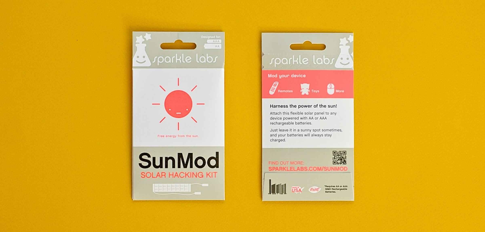

Writing
Follow me on MediumWhen I heard about Make Magazine, I immediately contacted Mark Frauenfelder and asked if he would be interested in a more female approach to some articles. He was really excited and asked Sparkle Labs to write an article and see how it goes.
We wrote for Make for many years.



SunMod
I created the SunMod from a Make Magazine article I wrote. I had hacked my TV remote to make it solar powered and wrote this article. I had it manufactured and it is still one of our top selling kits. It is used in schools to teach Green Energy.